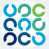

ACS Professional Year (ICT)
Australian Computer Society, delivered by  NIT (National Institute of Technology), Darwin NT, Oct 2025 to Oct 2026
NIT (National Institute of Technology), Darwin NT, Oct 2025 to Oct 2026
Professional communication, Australian ICT standards and ethics, and workplace readiness, with assessments in innovation, change management and ICT consulting.
Bachelor of Information Technology
Charles Darwin University, graduated 2025
IT systems, networking, databases, cybersecurity and software development, including desktop support and LAN administration.
Online learning
Skillsoft, completed
- ISC2 Certified in Cybersecurity learning path
 CompTIA Tech+ learning path
CompTIA Tech+ learning path
CISA (ISACA) IT management frameworks- GitHub Copilot
Certificates and memberships
First Aid and CPR, RSA (NT) and Fire Safety Training, all current. Member of the Australian Computer Society.
Logos belong to their owners: Charles Darwin University, NIT (National Institute of Technology), the Australian Computer Society, Skillsoft, ISC2, CompTIA and ISACA, each taken from their official website, and GitHub from Simple Icons (CC0). They show where I studied and what I completed, and don't imply endorsement.